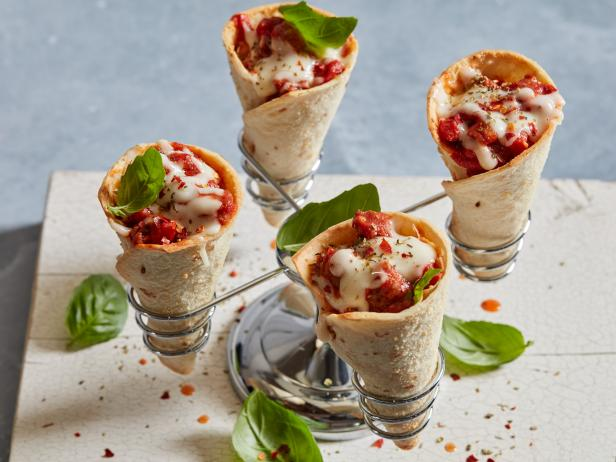

Pizza Cone

Preparation time: 60 minutes
Ingredients:
- Plain flour 2 cups
- Dry yeast 1 teaspoon
- Dry milk powder 2 teaspoons
- Sugar 1 teaspoon
- Salt ¼ teaspoon
- Egg 1
- Oil 2 teaspoons
- Warm water as required
Instructions:
-
Combine dry ingredients, mix in egg, oil, and water. Rest dough for 45
minutes to double in size.
-
Create cone templates with paper, transfer to card paper, wrap with
foil.
- Roll out dough, cut into cone shapes using templates.
-
Mold dough around cones, seal edges. Bake at 180°C for 10-12 minutes.
- Remove cones from oven, let cool. Remove card paper cones.
-
In a bowl, mix cooked chicken, pizza sauce, capsicum, onion, green
chilies, and cheese.
- Fill cones with mixture, top with cheese and oregano.
-
Bake for 5 minutes until cheese melts. Wrap bottom of cones with butter
paper and serve.
Main Page